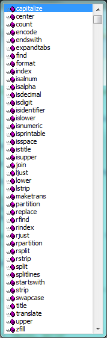
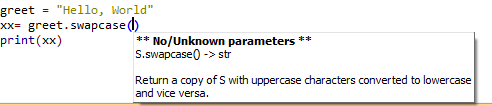

8. Strings¶
8.1. A compound data type¶
So far we have seen built-in types like int, float, bool, str and we’ve seen lists and pairs. Strings, lists, and pairs are qualitatively different from the others because they are made up of smaller pieces. In the case of strings, they’re made up of smaller strings each containing one character.
Types that comprise smaller pieces are called compound data types. Depending on what we are doing, we may want to treat a compound data type as a single thing, or we may want to access its parts. This ambiguity is useful.
8.2. Working with strings as single things¶
We previously saw that each turtle instance has its own attributes and a number of methods that can be applied to the instance. For example, we could set the turtle’s color, and we wrote tess.turn(90).
Just like a turtle, a string is also an object. So each string instance has its own attributes and methods.
For example:
>>> ss = "Hello, World!" >>> tt = ss.upper() >>> tt 'HELLO, WORLD!'
upper is a method that can be invoked on any string object to create a new string, in which all the characters are in uppercase. (The original string ss remains unchanged.)
There are also methods such as lower, capitalize, and swapcase that do other interesting stuff.
To learn what methods are available, you can consult the Help documentation, look for string methods, and read the documentation. Or, if you’re a bit lazier, simply type the following into a PyScripter script:
When you type the period to select one of the methods of ss, PyScripter will pop up a selection window showing all the methods (there are around 70 of them — thank goodness we’ll only use a few of those!) that could be used on your string.

When you type the name of the method, some further help about its parameter and return type, and its docstring, will be displayed. This is a good example of a tool — PyScripter — using the meta-information — the docstrings — provided by the module programmers.

8.3. Working with the parts of a string¶
The indexing operator (Python uses square brackets to enclose the index) selects a single character substring from a string:
>>> fruit = "banana" >>> m = fruit[1] >>> print(m)
The expression fruit[1] selects character number 1 from fruit, and creates a new string containing just this one character. The variable m refers to the result. When we display m, we could get a surprise:
a
Computer scientists always start counting from zero! The letter at subscript position zero of "banana" is b. So at position [1] we have the letter a.
If we want to access the zero-eth letter of a string, we just place 0, or any expression that evaluates to 0, inbetween the brackets:
>>> m = fruit[0] >>> print(m) b
The expression in brackets is called an index. An index specifies a member of an ordered collection, in this case the collection of characters in the string. The index indicates which one you want, hence the name. It can be any integer expression.
We can use enumerate to visualize the indices:
>>> fruit = "banana" >>> list(enumerate(fruit)) [(0, 'b'), (1, 'a'), (2, 'n'), (3, 'a'), (4, 'n'), (5, 'a')]
Do not worry about enumerate at this point, we will see more of it in the chapter on lists.
Note that indexing returns a string — Python has no special type for a single character. It is just a string of length 1.
We’ve also seen lists previously. The same indexing notation works to extract elements from a list:
>>> prime_nums = [2, 3, 5, 7, 11, 13, 17, 19, 23, 29, 31] >>> prime_nums[4] 11 >>> friends = ["Joe", "Zoe", "Brad", "Angelina", "Zuki", "Thandi", "Paris"] >>> friends[3] 'Angelina'
8.4. Length¶
The len function, when applied to a string, returns the number of characters in a string:
>>> fruit = "banana" >>> len(fruit) 6
To get the last letter of a string, you might be tempted to try something like this:
That won’t work. It causes the runtime error IndexError: string index out of range. The reason is that there is no character at index position 6 in "banana". Because we start counting at zero, the six indexes are numbered 0 to 5. To get the last character, we have to subtract 1 from the length of fruit:
Alternatively, we can use negative indices, which count backward from the end of the string. The expression fruit[-1] yields the last letter, fruit[-2] yields the second to last, and so on.
As you might have guessed, indexing with a negative index also works like this for lists.
We won’t use negative indexes in the rest of these notes — not many computer languages use this idiom, and you’ll probably be better off avoiding it. But there is plenty of Python code out on the Internet that will use this trick, so it is best to know that it exists.
8.5. Traversal and the for loop¶
A lot of computations involve processing a string one character at a time. Often they start at the beginning, select each character in turn, do something to it, and continue until the end. This pattern of processing is called a traversal. One way to encode a traversal is with a while statement:
This loop traverses the string and displays each letter on a line by itself. The loop condition is ix < len(fruit), so when ix is equal to the length of the string, the condition is false, and the body of the loop is not executed. The last character accessed is the one with the index len(fruit)-1, which is the last character in the string.
But we’ve previously seen how the for loop can easily iterate over the elements in a list and it can do so for strings as well:
Each time through the loop, the next character in the string is assigned to the variable c. The loop continues until no characters are left. Here we can see the expressive power the for loop gives us compared to the while loop when traversing a string.
The following example shows how to use concatenation and a for loop to generate an abecedarian series. Abecedarian refers to a series or list in which the elements appear in alphabetical order. For example, in Robert McCloskey’s book Make Way for Ducklings, the names of the ducklings are Jack, Kack, Lack, Mack, Nack, Ouack, Pack, and Quack. This loop outputs these names in order:
The output of this program is:
Jack Kack Lack Mack Nack Oack Pack Qack
Of course, that’s not quite right because Ouack and Quack are misspelled. You’ll fix this as an exercise below.
8.6. Slices¶
A substring of a string is obtained by taking a slice. Similarly, we can slice a list to refer to some sublist of the items in the list:
>>> s = "Peter, Paul, and Mary" >>> print(s[0:5]) Peter >>> print(s[7:11]) Paul >>> print(s[17:21]) Mary >>> friends = ["Joe", "Zoe", "Brad", "Angelina", "Zuki", "Thandi", "Paris"] >>> print(friends[2:4]) ['Brad', 'Angelina']
The operator [n:m] returns the part of the string from the n’th character to the m’th character, including the first but excluding the last. This behavior makes sense if you imagine the indices pointing between the characters, as in the following diagram:

Now if you imagine this as a piece of paper, the slice operator [n:m] cuts the paper at the n and m positions.
Two tricks are added to this: if you omit the first index (before the colon), the slice starts at the beginning of the string (or list). If you omit the second index, the slice extends to the end of the string (or list). Thus:
>>> fruit = "banana" >>> fruit[:3] 'ban' >>> fruit[3:] 'ana'
What do you think s[:] means? What about friends[4:]?
8.7. String comparison¶
The comparison operators work on strings. To see if two strings are equal:
Other comparison operations are useful for putting words in lexicographical order:
This is similar to the alphabetical order you would use with a dictionary, except that all the uppercase letters come before all the lowercase letters. As a result:
Your word, Zebra, comes before banana.
A common way to address this problem is to convert strings to a standard format, such as all lowercase, before performing the comparison. A more difficult problem is making the program realize that zebras are not fruit.
8.8. Strings are immutable¶
It is tempting to use the [] operator on the left side of an assignment, with the intention of changing a character in a string. For example:
Instead of producing the output Jello, world!, this code produces the runtime error TypeError: 'str' object does not support item assignment.
Strings are immutable, which means you can’t change an existing string. The best you can do is create a new string that is a variation on the original:
The solution here is to concatenate a new first letter onto a slice of greeting. This operation has no effect on the original string.
8.9. The in and not in operators¶
The in operator tests for membership. When both of the arguments to in are strings, in checks whether the left argument is a substring of the right argument.
>>> "p" in "apple" True >>> "i" in "apple" False >>> "ap" in "apple" True >>> "pa" in "apple" False
Note that a string is a substring of itself, and the empty string is a substring of any other string. (Also note that computer scientists like to think about these edge cases quite carefully!)
>>> "a" in "a" True >>> "apple" in "apple" True >>> "" in "a" True >>> "" in "apple" True
The not in operator returns the logical opposite results of in:
>>> "x" not in "apple" True
Combining the in operator with string concatenation using +, we can write a function that removes all the vowels from a string:
8.10. A find function¶
What does the following function do?
In a sense, find is the opposite of the indexing operator. Instead of taking an index and extracting the corresponding character, it takes a character and finds the index where that character appears. If the character is not found, the function returns -1.
This is another example where we see a return statement inside a loop. If strng[ix] == ch, the function returns immediately, breaking out of the loop prematurely.
If the character doesn’t appear in the string, then the program exits the loop normally and returns -1.
This pattern of computation is sometimes called a eureka traversal or short-circuit evaluation, because as soon as we find what we are looking for, we can cry “Eureka!”, take the short-circuit, and stop looking.
8.11. Looping and counting¶
The following program counts the number of times the letter a appears in a string, and is another example of the counter pattern introduced in Counting digits:
8.12. Optional parameters¶
To find the locations of the second or third occurrence of a character in a string, we can modify the find function, adding a third parameter for the starting position in the search string:
The call find2("banana", "a", 2) now returns 3, the index of the first occurrence of “a” in “banana” starting the search at index 2. What does find2("banana", "n", 3) return? If you said, 4, there is a good chance you understand how find2 works.
Better still, we can combine find and find2 using an optional parameter:
When a function has an optional parameter, the caller may provide a matching argument. If the third argument is provided to find, it gets assigned to start. But if the caller leaves the argument out, then start is given a default value indicated by the assignment start=0 in the function definition.
So the call find("banana", "a", 2) to this version of find behaves just like find2, while in the call find("banana", "a"), start will be set to the default value of 0.
Adding another optional parameter to find makes it search from a starting position, up to but not including the end position:
The optional value for end is interesting: we give it a default value None if the caller does not supply any argument. In the body of the function we test what end is, and if the caller did not supply any argument, we reassign end to be the length of the string. If the caller has supplied an argument for end, however, the caller’s value will be used in the loop.
The semantics of start and end in this function are precisely the same as they are in the range function.
Here are some test cases that should pass:
8.13. The built-in find method¶
Now that we’ve done all this work to write a powerful find function, we can reveal that strings already have their own built-in find method. It can do everything that our code can do, and more!
The built-in find method is more general than our version. It can find substrings, not just single characters:
>>> "banana".find("nan") 2 >>> "banana".find("na", 3) 4
Usually we’d prefer to use the methods that Python provides rather than reinvent our own equivalents. But many of the built-in functions and methods make good teaching exercises, and the underlying techniques you learn are your building blocks to becoming a proficient programmer.
8.14. The split method¶
One of the most useful methods on strings is the split method: it splits a single multi-word string into a list of individual words, removing all the whitespace between them. (Whitespace means any tabs, newlines, or spaces.) This allows us to read input as a single string, and split it into words.
>>> ss = "Well I never did said Alice" >>> wds = ss.split() >>> wds ['Well', 'I', 'never', 'did', 'said', 'Alice']
8.15. Cleaning up your strings¶
We’ll often work with strings that contain punctuation, or tab and newline characters, especially, as we’ll see in a future chapter, when we read our text from files or from the Internet. But if we’re writing a program, say, to count word frequencies or check the spelling of each word, we’d prefer to strip off these unwanted characters.
We’ll show just one example of how to strip punctuation from a string. Remember that strings are immutable, so we cannot change the string with the punctuation — we need to traverse the original string and create a new string, omitting any punctuation:
Setting up that first assignment is messy and error-prone. Fortunately, the Python string module already does it for us. So we will make a slight improvement to this program — we’ll import the string module and use its definition:
Composing together this function and the split method from the previous section makes a useful combination — we’ll clean out the punctuation, and split will clean out the newlines and tabs while turning the string into a list of words:
The output:
['Pythons', 'are', 'constrictors', ... , 'it', 'snake', 'POOP']
There are other useful string methods, but this book isn’t intended to be a reference manual. On the other hand, the Python Library Reference is. Along with a wealth of other documentation, it is available at the Python website.
8.16. The string format method¶
The easiest and most powerful way to format a string in Python 3 is to use the format method. To see how this works, let’s start with a few examples:
Running the script produces:
His name is Arthur! I am Alice and I am 10 years old. 2**10 = 1024 and 4 * 5 = 20.000000
- The template string contains place holders,
- ... {0} ... {1} ... {2} ... etc.
The format method substitutes its arguments into the place holders. The numbers in the place holders are indexes that determine which argument gets substituted — make sure you understand line 6 above!
But there’s more! Each of the replacement fields can also contain a format specification — it is always introduced by the : symbol (Line 11 above uses one.) This modifies how the substitutions are made into the template, and can control things like:
- whether the field is aligned to the left <, center ^, or right >
- the width allocated to the field within the result string (a number like 10)
- the type of conversion (we’ll initially only force conversion to float, f, as we did in line 11 of the code above, or perhaps we’ll ask integer numbers to be converted to hexadecimal using x)
- if the type conversion is a float, you can also specify how many decimal places are wanted (typically, .2f is useful for working with currencies to two decimal places.)
Let’s do a few simple and common examples that should be enough for most needs. If you need to do anything more esoteric, use help and read all the powerful, gory details.
This script produces the output:
Pi to three decimal places is 3.142 123456789 123456789 123456789 123456789 123456789 123456789 |||Paris ||| Whitney ||| Hilton|||Born in 1981||| The decimal value 123456 converts to hex value 1e240
You can have multiple placeholders indexing the same argument, or perhaps even have extra arguments that are not referenced at all:
This produces the following:
Dear Paris Hilton. Paris, I have an interesting money-making proposition for you! If you deposit $10 million into my bank account, I can double your money ... Dear Bill Gates. Bill, I have an interesting money-making proposition for you! If you deposit $10 million into my bank account I can double your money ...
As you might expect, you’ll get an index error if your placeholders refer to arguments that you do not provide:
>>> "hello {3}".format("Dave") Traceback (most recent call last): File "<interactive input>", line 1, in <module> IndexError: tuple index out of range
The following example illustrates the real utility of string formatting. First, we’ll try to print a table without using string formatting:
This program prints out a table of various powers of the numbers from 1 to 10. (This assumes that the tab width is 8. You might see something even worse than this if you tab width is set to 4.) In its current form it relies on the tab character ( \t) to align the columns of values, but this breaks down when the values in the table get larger than the tab width:
i i**2 i**3 i**5 i**10 i**20 1 1 1 1 1 1 2 4 8 32 1024 1048576 3 9 27 243 59049 3486784401 4 16 64 1024 1048576 1099511627776 5 25 125 3125 9765625 95367431640625 6 36 216 7776 60466176 3656158440062976 7 49 343 16807 282475249 79792266297612001 8 64 512 32768 1073741824 1152921504606846976 9 81 729 59049 3486784401 12157665459056928801 10 100 1000 100000 10000000000 100000000000000000000
One possible solution would be to change the tab width, but the first column already has more space than it needs. The best solution would be to set the width of each column independently. As you may have guessed by now, string formatting provides a much nicer solution. We can also right-justify each field:
Running this version produces the following (much more satisfying) output:
i i**2 i**3 i**5 i**10 i**20 1 1 1 1 1 1 2 4 8 32 1024 1048576 3 9 27 243 59049 3486784401 4 16 64 1024 1048576 1099511627776 5 25 125 3125 9765625 95367431640625 6 36 216 7776 60466176 3656158440062976 7 49 343 16807 282475249 79792266297612001 8 64 512 32768 1073741824 1152921504606846976 9 81 729 59049 3486784401 12157665459056928801 10 100 1000 100000 10000000000 100000000000000000000
8.17. Summary¶
This chapter introduced a lot of new ideas. The following summary may prove helpful in remembering what you learned.
- indexing ([])
- Access a single character in a string using its position (starting from 0). Example: "This"[2] evaluates to "i".
- length function (len)
- Returns the number of characters in a string. Example: len("happy") evaluates to 5.
- for loop traversal (for)
Traversing a string means accessing each character in the string, one at a time. For example, the following for loop:
for ch in "Example": ...
executes the body of the loop 7 times with different values of ch each time.
- slicing ([:])
- A slice is a substring of a string. Example: 'bananas and cream'[3:6] evaluates to ana (so does 'bananas and cream'[1:4]).
- string comparison (>, <, >=, <=, ==, !=)
- The six common comparison operators work with strings, evaluating according to lexicographical order. Examples: "apple" < "banana" evaluates to True. "Zeta" < "Appricot" evaluates to False. "Zebra" <= "aardvark" evaluates to True because all upper case letters precede lower case letters.
- in and not in operator (in, not in)
- The in operator tests for membership. In the case of strings, it tests whether one string is contained inside another string. Examples: "heck" in "I'll be checking for you." evaluates to True. "cheese" in "I'll be checking for you." evaluates to False.
8.18. Glossary¶
- compound data type
- A data type in which the values are made up of components, or elements, that are themselves values.
- default value
- The value given to an optional parameter if no argument for it is provided in the function call.
- docstring
- A string constant on the first line of a function or module definition (and as we will see later, in class and method definitions as well). Docstrings provide a convenient way to associate documentation with code. Docstrings are also used by programming tools to provide interactive help.
- dot notation
- Use of the dot operator, ., to access methods and attributes of an object.
- immutable data value
- A data value which cannot be modified. Assignments to elements or slices (sub-parts) of immutable values cause a runtime error.
- index
- A variable or value used to select a member of an ordered collection, such as a character from a string, or an element from a list.
- mutable data value
- A data value which can be modified. The types of all mutable values are compound types. Lists and dictionaries are mutable; strings and tuples are not.
- optional parameter
- A parameter written in a function header with an assignment to a default value which it will receive if no corresponding argument is given for it in the function call.
- short-circuit evaluation
- A style of programming that shortcuts extra work as soon as the outcome is know with certainty. In this chapter our find function returned as soon as it found what it was looking for; it didn’t traverse all the rest of the items in the string.
- slice
- A part of a string (substring) specified by a range of indices. More generally, a subsequence of any sequence type in Python can be created using the slice operator (sequence[start:stop]).
- traverse
- To iterate through the elements of a collection, performing a similar operation on each.
- whitespace
- Any of the characters that move the cursor without printing visible characters. The constant string.whitespace contains all the white-space characters.
8.19. Exercises¶
We suggest you create a single file containing the test scaffolding from our previous chapters, and put all functions that require tests into that file.
What is the result of each of the following:
>>> "Python"[1] >>> "Strings are sequences of characters."[5] >>> len("wonderful") >>> "Mystery"[:4] >>> "p" in "Pineapple" >>> "apple" in "Pineapple" >>> "pear" not in "Pineapple" >>> "apple" > "pineapple" >>> "pineapple" < "Peach"
Modify:
1 2 3 4 5
prefixes = "JKLMNOPQ" suffix = "ack" for letter in prefixes: print(letter + suffix)
so that Ouack and Quack are spelled correctly.
Encapsulate
1 2 3 4 5 6
fruit = "banana" count = 0 for char in fruit: if char == "a": count += 1 print(count)
in a function named count_letters, and generalize it so that it accepts the string and the letter as arguments. Make the function return the number of characters, rather than print the answer. The caller should do the printing.
Now rewrite the count_letters function so that instead of traversing the string, it repeatedly calls the find method, with the optional third parameter to locate new occurrences of the letter being counted.
Assign to a variable in your program a triple-quoted string that contains your favourite paragraph of text — perhaps a poem, a speech, instructions to bake a cake, some inspirational verses, etc.
Write a function which removes all punctuation from the string, breaks the string into a list of words, and counts the number of words in your text that contain the letter “e”. Your program should print an analysis of the text like this:
Your text contains 243 words, of which 109 (44.8%) contain an "e".Print out a neatly formatted multiplication table, up to 12 x 12.
Write a function that reverses its string argument, and satisfies these tests:
1 2 3 4
test(reverse("happy"), "yppah") test(reverse("Python"), "nohtyP") test(reverse(""), "") test(reverse("a"), "a")
Write a function that mirrors its argument:
1 2 3 4
test(mirror("good"), "gooddoog") test(mirror("Python"), "PythonnohtyP") test(mirror(""), "") test(mirror("a"), "aa")
Write a function that removes all occurrences of a given letter from a string:
1 2 3 4 5 6
test(remove_letter("a", "apple"), "pple") test(remove_letter("a", "banana"), "bnn") test(remove_letter("z", "banana"), "banana") test(remove_letter("i", "Mississippi"), "Msssspp") test(remove_letter("b", ""), "") test(remove_letter("b", "c"), "c")
Write a function that recognizes palindromes. (Hint: use your reverse function to make this easy!):
1 2 3 4 5 6 7
test(is_palindrome("abba"), True) test(is_palindrome("abab"), False) test(is_palindrome("tenet"), True) test(is_palindrome("banana"), False) test(is_palindrome("straw warts"), True) test(is_palindrome("a"), True) # test(is_palindrome(""), ??) # Is an empty string a palindrome?
Write a function that counts how many times a substring occurs in a string:
1 2 3 4 5 6
test(count("is", "Mississippi"), 2) test(count("an", "banana"), 2) test(count("ana", "banana"), 2) test(count("nana", "banana"), 1) test(count("nanan", "banana"), 0) test(count("aaa", "aaaaaa"), 4)
Write a function that removes the first occurrence of a string from another string:
1 2 3 4
test(remove("an", "banana"), "bana") test(remove("cyc", "bicycle"), "bile") test(remove("iss", "Mississippi"), "Missippi") test(remove("eggs", "bicycle"), "bicycle")
Write a function that removes all occurrences of a string from another string:
1 2 3 4
test(remove_all("an", "banana"), "ba") test(remove_all("cyc", "bicycle"), "bile") test(remove_all("iss", "Mississippi"), "Mippi") test(remove_all("eggs", "bicycle"), "bicycle")